In this novel work Method development and validation for analysis of phenolic compounds in fatty complex matrices using enhanced matrix removal (EMR) lipid cleanup and UHPLC-QqQ-MS/MS published in Food Chemistry, we developed a robust method to analyze 55 phenolic compounds in fatty matrices, utilizing QuEChERS and Enhanced Matrix Removal (EMR)-lipid cleanup in 96-well plates, along with UHPLC-QqQ-MS/MS. Method validation across seven high-fat matrices yielded promising recoveries and accuracy, showing potential for high-throughput and sensitive analysis in diverse applications.
This documentation records the R code developed for data analysis and visualization used in the publication.
The R code has been developed with reference to R for Data Science (2e), and the official documentation of tidyverse, and DataBrewer.co. See breakdown of modules below:
Data visualization with ggplot2 (tutorial of the fundamentals; and data viz. gallery).
Data wrangling with the following packages: tidyr, transform (e.g., pivoting) the dataset into tidy structure; dplyr, the basic tools to work with data frames; stringr, work with strings; regular expression: search and match a string pattern; purrr, functional programming (e.g., iterating functions across elements of columns); and tibble, work with data frames in the modern tibble structure.
library(tidyverse)
library(readxl)
library(stringr)
library(rebus)
library(RColorBrewer)
library(cowplot)
library(viridis)
library(ggrepel)
# global plot setup
theme_set(theme_bw() +
theme(
# strip.text = element_text(face = "bold"),
strip.text = element_blank(),
strip.background = element_blank(),
strip.placement = "outside",
axis.text = element_text(colour = "black", size = 17),
axis.title = element_text(colour = "black", face = "bold", size = 18),
panel.grid = element_blank()))
# input data
path = "/Users/Boyuan/Desktop/My publication/18. Polyphenol EMR J. Food Chem (Zhiya)/ready files/Validation result.xlsx"
d = read_excel(path, sheet = "all")
# str(d)
# remove Catechin analogues of poor recovery at drying step
d2 = d %>% select(-c("C", "EC", "PAC-B2", "4-O-Me-C", "3-O-Me-EC", "4-O-Me-EC"))
# str(d2)
# tidy up
d2.tidy = d2 %>%
gather(-c(matrix, validation, mean.sd, IScorrection),
key = compound, value = value)
# convert value to percentage
d2.tidy = d2.tidy %>% mutate(value = value * 100) %>%
spread(key = mean.sd, value = value)
d2.tidy$compound %>% n_distinct()## [1] 49# accuracy
d.accuracy = d2.tidy %>%
filter(validation %>% str_detect("Accuracy"))
# add spike level
d.accuracy$level = d.accuracy$validation %>%
str_extract(pattern = DOT %R% WRD) %>%
str_extract(WRD)
d.accuracy = d.accuracy %>%
mutate(validation = "Accuracy")
# define plot numbers
color.compound = (c(brewer.pal(8, "Dark2"),
brewer.pal(11, "Spectral")[-c(5, 6, 7)],# remove light colors
"black", "grey") %>% sort() %>%
colorRampPalette())(d2.tidy$compound %>% n_distinct())
n.matrix = d.accuracy$matrix %>% n_distinct()
# plot accuracy
dg = .5
d.badAccuracy = d.accuracy %>% filter(mean < 0 | mean > 200 | std > 50)
d.badAccuracy## # A tibble: 12 x 7
## matrix validation IScorrection compound mean std level
## <chr> <chr> <chr> <chr> <dbl> <dbl> <chr>
## 1 Avocado Accuracy T 4-HCA -55.2 434. A
## 2 Avocado Accuracy T CA 173. 80.0 A
## 3 Avocado Accuracy T FA 123. 604. A
## 4 Avocado Accuracy T 4-HCA -1561. 2106. B
## 5 Avocado Accuracy T CA 332. 454. B
## 6 Avocado Accuracy T FA -1042. 2593. B
## 7 Beef Accuracy T DHF 236. 9.73 A
## 8 Horse serum Accuracy T HA 95.8 60.1 A
## 9 Horse serum Accuracy T HA 60.9 215. B
## 10 Horse serum Accuracy T PA 102. 57.9 B
## 11 Pork liver Accuracy T DHF 234. 9.63 A
## 12 Pork liver Accuracy T HA 172. 71.6 B# Showing what data points are removed from plot
plt.accuracy = d.accuracy %>%
anti_join(d.badAccuracy) %>%
ggplot(aes(x = level, y = mean, color = compound)) +
geom_boxplot(outlier.alpha = 0, aes(group = level), fill = "white", width = .8) +
annotate("rect", alpha = .15, fill = "springgreen4",
xmin = .5, xmax = 2.5, ymin = 80, ymax = 120) +
geom_boxplot(outlier.alpha = 0, aes(group = level), fill = "white", width = .8) +
geom_errorbar(size = .3,
aes(ymin = mean - std,
ymax = mean + std),
position = position_dodge(dg)) +
geom_point(size = 4, position = position_dodge(dg), fill = "white", shape = 21) +
geom_point(size = 4, position = position_dodge(dg), alpha = 0.3) +
scale_color_manual(values = color.compound) +
scale_fill_manual(values = color.compound) +
facet_grid(matrix ~ validation, scales = "free_y", switch = "y") +
labs(x = "Spike level") +
theme(legend.position = "none", axis.title.y = element_blank()) +
geom_segment(aes(x = .5, xend = 2.5, y = 100, yend = 100),
color = "darkgreen", linetype = "dashed", size = .1)
# plt.accuracy
# recovery
d.recovery = d2.tidy %>%
filter(validation %>% str_detect("recovery"))
# cleanup and put in order sample prep step names
d.recovery$validation = d.recovery$validation %>% str_remove(pattern = "recovery" %R% DOT)
d.recovery$validation =
d.recovery$validation %>% factor(
levels = d.recovery$validation %>% unique() %>% rev(),
ordered = T)
# check outlier numbers
d.badRecovery = d.recovery %>% filter(mean > 200 | std > 50 | std < 0 )
d.badRecovery## # A tibble: 28 x 6
## matrix validation IScorrection compound mean std
## <chr> <ord> <chr> <chr> <dbl> <dbl>
## 1 Avocado Overall recovery F 4-HCA 1213. 4953.
## 2 Avocado Overall recovery F FA -1101. -7884.
## 3 Avocado Overall recovery T 4-HBA 133. 54.5
## 4 Avocado Overall recovery T CA 255. 1249.
## 5 Avocado Drying F 4-HCA 553. 2294.
## 6 Avocado Drying F CA 117. 97.3
## 7 Avocado Drying F FA -524. -3814.
## 8 Avocado Drying T 4-HCA 120. 56.2
## 9 Avocado Drying T CA 185. 978.
## 10 Avocado Drying T FA 126. 75.1
## # … with 18 more rows# plot
dg2 = .5
plt.recovery = d.recovery %>%
anti_join(d.badRecovery) %>%
ggplot(aes(x = IScorrection, y = mean, color = compound)) +
geom_boxplot(outlier.alpha = 0, aes(group = IScorrection), fill = "white", width = .8) +
annotate("rect", alpha = .15, fill = "springgreen4",
xmin = .5, xmax = 2.5, ymin = 80, ymax = 120) +
geom_boxplot(outlier.alpha = 0, aes(group = IScorrection), fill = "white", width = .8) +
geom_errorbar(size = .3, aes(ymin = mean - std,
ymax = mean + std),
position = position_dodge(dg2)) +
geom_point(size = 4, position = position_dodge(dg2), fill = "white", shape = 21) +
geom_point(size = 4, position = position_dodge(dg2), alpha = 0.1) +
scale_color_manual(values = color.compound) +
scale_fill_manual(values = color.compound) +
facet_grid(matrix ~ validation,
scales = "free_y", switch = "y") +
labs(x = "IS-correction") +
theme(legend.position = "none", axis.title.y = element_blank()) +
geom_segment(aes(x = .5, xend = 2.5, y = 100, yend = 100),
color = "darkgreen", linetype = "dashed", size = .1)
# plt.recovery
# matrix effect
d.matrixEffect = d2.tidy %>%
filter(validation %>% str_detect("Matrix effect"))
# check outlier numbers
d.badMatrix = d.matrixEffect %>% filter(mean > 200 | std > 50 | std < 0 )
d.badMatrix## # A tibble: 14 x 6
## matrix validation IScorrection compound mean std
## <chr> <chr> <chr> <chr> <dbl> <dbl>
## 1 Avocado Matrix effect F 4-HCA -157. -638.
## 2 Avocado Matrix effect F CA 425. 295.
## 3 Avocado Matrix effect F FA 161. 1145.
## 4 Avocado Matrix effect T 4-HCA -7085. -2539.
## 5 Avocado Matrix effect T CA 113. 534.
## 6 Avocado Matrix effect T FA -7321. -3416.
## 7 Beef Matrix effect F R3G 417. 22.8
## 8 Beef Matrix effect T DHF 274. 9.25
## 9 Beef Matrix effect T R3G 609. 31.8
## 10 Horse serum Matrix effect F HA 1579. 370.
## 11 Horse serum Matrix effect F PA 216. 56.9
## 12 Horse serum Matrix effect T HA 91.2 148.
## 13 Horse serum Matrix effect T PA 105. 56.4
## 14 Pork liver Matrix effect T DHF 274. 9.25# plot
dg3 = .5
plt.MatrixEffect = d.matrixEffect %>%
anti_join(d.badMatrix) %>%
ggplot(aes(x = IScorrection, y = mean, color = compound)) +
geom_boxplot(outlier.alpha = 0, aes(group = IScorrection), fill = "white", width = .8) +
annotate("rect", alpha = .15, fill = "springgreen4",
xmin = .5, xmax = 2.5, ymin = 80, ymax = 120) +
geom_boxplot(outlier.alpha = 0, aes(group = IScorrection), fill = "white", width = .8) +
geom_errorbar(size = .3, aes(ymin = mean - std,
ymax = mean + std),
position = position_dodge(dg3)) +
geom_point(size = 4, position = position_dodge(dg3), fill = "white", shape = 21) +
geom_point(size = 4, position = position_dodge(dg3), alpha = 0.3) +
scale_color_manual(values = color.compound) +
scale_fill_manual(values = color.compound) +
facet_grid(matrix ~ validation,
scales = "free_y", switch = "y") +
labs(x = "IS-correction") +
theme(legend.position = "none", axis.title.y = element_blank()) +
geom_segment(aes(x = .5, xend = 2.5, y = 100, yend = 100),
color = "darkgreen", linetype = "dashed", size = .1)
# plt.MatrixEffect
# Processing efficiency
d.processEfficiency = d2.tidy %>%
filter(validation %>% str_detect("Overall process efficiency"))
# check outlier numbers
d.badProcessEfficiency = d.processEfficiency %>% filter(mean > 200 | std > 50 | std < 0 )
d.badProcessEfficiency## # A tibble: 12 x 6
## matrix validation IScorrection compound mean std
## <chr> <chr> <chr> <chr> <dbl> <dbl>
## 1 Avocado Overall process efficiency F 4-HCA -1901. -674.
## 2 Avocado Overall process efficiency F CA 47.6 197.
## 3 Avocado Overall process efficiency F FA -1767. -1063.
## 4 Avocado Overall process efficiency T 4-HCA -1471. -1985.
## 5 Avocado Overall process efficiency T CA 289. 395.
## 6 Avocado Overall process efficiency T FA -917. -2283.
## 7 Beef Overall process efficiency T DHF 203. 9.02
## 8 Horse serum Overall process efficiency F HA 281. 316.
## 9 Horse serum Overall process efficiency F PA 93.6 56.2
## 10 Horse serum Overall process efficiency T HA 52.0 184.
## 11 Horse serum Overall process efficiency T PA 99.5 56.5
## 12 Pork liver Overall process efficiency T DHF 203. 9.02# plot
dg4 = .5
plt.processEfficiency = d.processEfficiency %>%
anti_join(d.badProcessEfficiency) %>%
ggplot(aes(x = IScorrection, y = mean, color = compound)) +
geom_boxplot(outlier.alpha = 0, aes(group = IScorrection), fill = "white", width = .8) +
annotate("rect", alpha = .15, fill = "springgreen4",
xmin = .5, xmax = 2.5, ymin = 80, ymax = 120) +
geom_boxplot(outlier.alpha = 0, aes(group = IScorrection), fill = "white", width = .8) +
geom_errorbar(size = .3, aes(ymin = mean - std,
ymax = mean + std),
position = position_dodge(dg4)) +
geom_point(size = 4, position = position_dodge(dg4), fill = "white", shape = 21) +
geom_point(size = 4, position = position_dodge(dg4), alpha = 0.3) +
scale_color_manual(values = color.compound) +
scale_fill_manual(values = color.compound) +
facet_grid(matrix ~ validation,
scales = "free_y", switch = "y") +
labs(x = "IS-correction") +
theme(legend.position = "none", axis.title.y = element_blank()) +
geom_segment(aes(x = 0.5, xend = 2.5, y = 100, yend = 100),
color = "darkgreen", linetype = "dashed", size = .1)
# plt.processEfficiency
# -------# -------# -------# -------# -------# -------
p1 = plot_grid(plt.accuracy,
plt.recovery,
plt.MatrixEffect,
plt.processEfficiency,
nrow = 1,
rel_widths = c(1, 3.5, 1, 1))
# Check outlier compounds and associated matrix
d.badALL = d.badAccuracy %>% select(-level) %>% rbind(d.badMatrix) %>%
rbind(d.badRecovery) %>% rbind(d.badProcessEfficiency)
# d.badALL %>% as.data.frame()
d.badALL %>% select(matrix, compound) %>%
table()## compound
## matrix 4-HBA 4-HCA CA DHF FA HA PA R3G
## Avocado 2 12 12 0 12 0 0 0
## Beef 0 0 0 3 0 0 0 2
## Horse serum 0 0 0 0 0 10 9 0
## Pork liver 0 0 0 3 0 1 0 0# bad criteria: filter(mean > 200 | std > 50 | std < 0 )
# new global setup
theme_set(theme_bw() +
theme(
strip.text = element_text(face = "bold"),
# strip.text = element_blank(),
strip.background = element_blank(),
strip.placement = "outside",
axis.text = element_text(colour = "black", size = 15.5),
axis.title = element_text(colour = "black", face = "bold", size = 15.5),
panel.grid = element_blank(),
legend.text = element_text(size = 15),
legend.title = element_text(size = 15, face = "bold")))
# ----# -----
# plt.allMatrix.accuracy = d2.tidy %>%
# filter(validation %>% str_detect("Accuracy")) %>%
#
# ggplot(aes(x = mean, color = validation, fill = validation)) +
# geom_histogram(binwidth = 5, alpha = .4, position = "dodge") +
# scale_x_continuous(limits = c(0, 200), breaks = seq(0, 200, 20)) +
# scale_y_continuous(breaks = seq(0, 200, 10)) +
# theme(legend.position = "bottom")
#
# plt.allMatrix.accuracy
# 2D density plot
d2.tidy$validation = d2.tidy$validation %>%
str_replace(pattern = "Accuracy.A", replacement = "Accuracy")
d2.tidy$validation = d2.tidy$validation %>%
str_replace(pattern = "Accuracy.B", replacement = "Accuracy")
plt.allMatrix.accuracy.2Ddensity =
d2.tidy %>%
filter(validation %>% str_detect("Accuracy")) %>%
ggplot(aes(x = mean, y = std)) +
stat_density_2d(aes(fill = stat(density)), geom = "raster", contour = F) +
geom_point(color = "white", shape = ".", alpha = .4) +
# scale_fill_viridis(option = "inferno") +
scale_fill_viridis(option = "D") +
geom_rug(sides = "tr", color = "black", alpha = 0.2) +
scale_x_log10() + scale_y_log10() +
annotation_logticks() +
# label outliers not presented in the box-scatter plot
geom_text_repel(data = d.badAccuracy,
aes(label = paste(compound,"_", matrix, "_", level)),
size = 4, color = "snow3")
# plt.allMatrix.accuracy.2Ddensity
# D2 density plot for recovery (Absolute, without IS-correction; extraction, EMR, and drying)
d2.tidy$validation %>% unique()## [1] "Accuracy" "Matrix effect" "Overall process efficiency" "Overall recovery"
## [5] "recovery.Drying" "recovery.EMR" "recovery.Extraction"d2.tidy.stepwiseRecovery.absolute = d2.tidy %>%
filter(validation %in% c("recovery.Extraction", "recovery.Drying", "recovery.EMR")) %>%
filter(IScorrection == "F")
d2.tidy.stepwiseRecovery.absolute$validation =
d2.tidy.stepwiseRecovery.absolute$validation %>% str_remove(pattern = "recovery.") %>%
str_replace(pattern = "Drying", replacement = "Dry")
# simplify bad recovery database
d.badRecoverySimplified = d.badRecovery %>%
filter(validation != "Overall recovery")
d.badRecoverySimplified$validation =
d.badRecoverySimplified$validation %>%
str_replace(pattern = "Drying", replacement = "Dry")
# plot
plt.allMatrix.Recovery.2Ddensity =
d2.tidy.stepwiseRecovery.absolute %>%
ggplot(aes(x = mean, y = std)) +
stat_density_2d(aes(fill = stat(density)), geom = "raster", contour = F) +
geom_point(color = "white", shape = ".", alpha = .4) +
# scale_fill_viridis(option = "inferno") +
scale_fill_viridis(option = "D") +
geom_rug(sides = "tr", color = "black", alpha = 0.2) +
scale_x_log10() + scale_y_log10() +
annotation_logticks() +
# label outliers not presented in the box-scatter plot
geom_text_repel(data = d.badRecoverySimplified,
aes(label = paste(compound,"_", matrix, "_", validation)),
size = 2, color = "snow3", arrow = F) +
facet_wrap(~validation, nrow = 1)
# plt.allMatrix.Recovery.2Ddensity
# d2.tidy.stepwiseRecovery.absolute %>%
# ggplot(aes(x = mean, color = IScorrection, fill = IScorrection)) +
# geom_histogram(binwidth = 5, alpha = .4, position = "dodge") +
# scale_x_continuous(limits = c(0, 200), breaks = seq(0, 200, 20)) +
# scale_y_continuous(breaks = seq(0, 200, 10)) +
# theme(legend.position = "bottom") +
# facet_wrap(~validation, nrow = 1)
# check validation success vs. background interference
d.background = read_excel(path, sheet = "background.vs.spike")
d.background = d.background %>%
gather(-c(matrix, level), key = compound, value = background.spk.ratio)
d.background = d.accuracy %>%
filter(IScorrection == "T") %>%
left_join(d.background, by = c("matrix", "compound", "level"))
# also add back accuracy dataset
d.background = d.background %>% left_join(
d.badAccuracy %>% select(-mean, -std) %>% mutate(bad = "bad"))
# plot
plt.background.vs.spk =
d.background %>%
ggplot(aes(x = background.spk.ratio, y = std,
shape = level, color = matrix, fill = matrix)) +
scale_x_log10(breaks = c(.001, .01, .1, 1, 10, 100, 1000)) +
scale_y_log10() +
annotation_logticks() +
geom_smooth(aes(group = 1),
se = F, color = "black", show.legend = F, size = 2) +
geom_point(size = 4, alpha = .7) +
geom_point(size = 4, alpha = .7, fill = "white") +
geom_text_repel(data = d.background[!d.background$bad %>% is.na(), ],
aes(label = paste(compound, "-", matrix),
x = background.spk.ratio), fontface = "bold",
size = 4.5) +
scale_shape_manual(values = c("A" = 21, "B" = 25)) +
scale_color_brewer(palette = "Dark2") +
scale_fill_brewer(palette = "Dark2")
# plt.background.vs.spk
p2 = plot_grid(plt.allMatrix.accuracy.2Ddensity,
plt.background.vs.spk)p2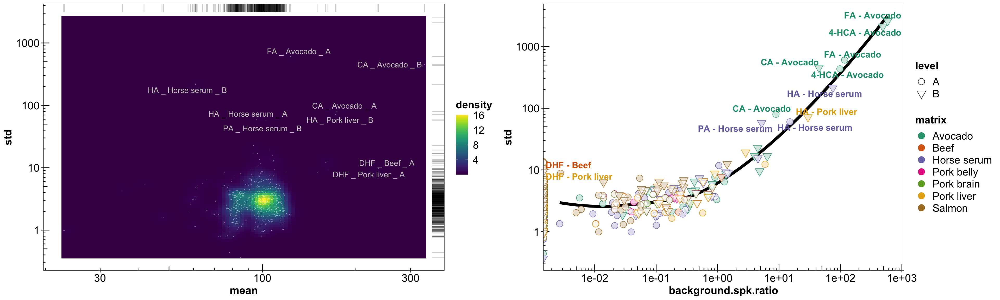
# plot_grid(p1, p2, nrow = 2,
# rel_heights = c(7, 2))# p1 small screen 17 X 12
p1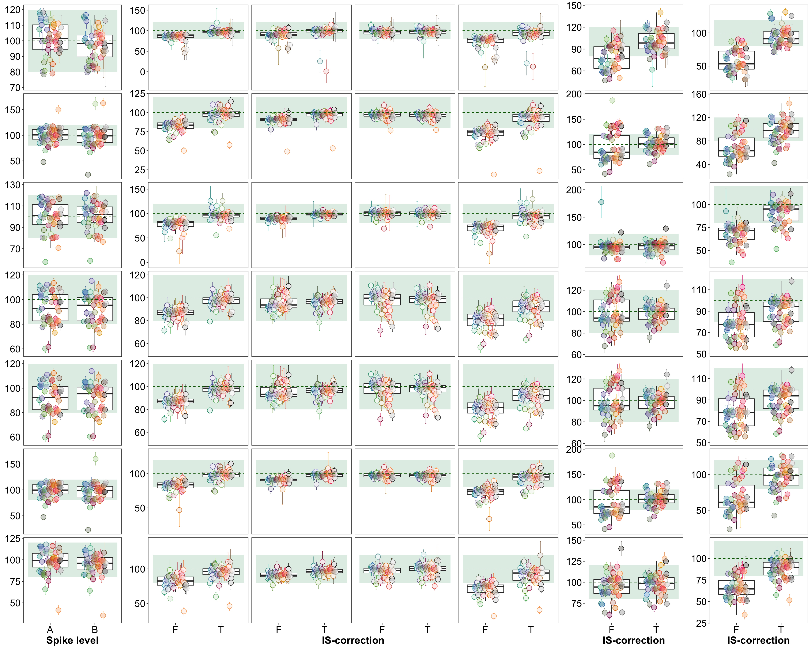
library(rebus)
library(gridExtra)##
## Attaching package: 'gridExtra'## The following object is masked from 'package:dplyr':
##
## combinelibrary(cowplot)
library(ggrepel)
library(readxl)
library(RColorBrewer)
library(tidyverse)
theme_set(theme_bw() + theme(axis.text = element_text(colour = "black"),
axis.title = element_text(colour = "black", face = "bold"),
strip.background = element_blank(),
strip.text = element_text(face = "bold")))
path = "/Users/Boyuan/Desktop/My publication/18. Polyphenol EMR J. Food Chem (Zhiya)/Polyphenol EMR All Data.xlsx"
# ACN percentage
d.opt.pct = read_excel(path, sheet = "ACN percent opt2")
d.opt.pct = d.opt.pct %>%
gather(-c(`Data File`, Name, `Acq. Date-Time`, solvent.pct), key = compound, value = resp)
x = d.opt.pct %>% filter(solvent.pct == "ctrl") %>%
group_by(compound) %>%
summarise(resp.ctrl.mean = mean(resp),resp.ctrl.sd = sd(resp))
y = d.opt.pct %>% filter(solvent.pct != "ctrl") %>%
group_by(solvent.pct, compound) %>%
summarise(resp.mean = mean(resp), resp.sd = sd(resp))
d.opt.pct.recovery = y %>% left_join(x, by = c("compound")) %>%
mutate(recovery.mean = resp.mean / resp.ctrl.mean * 100,
recovery.sd = sqrt((resp.sd/resp.mean)^2 + (resp.ctrl.sd/resp.ctrl.mean)^2) * recovery.mean )
d.opt.pct.recovery## # A tibble: 378 x 8
## # Groups: solvent.pct [7]
## solvent.pct compound resp.mean resp.sd resp.ctrl.mean resp.ctrl.sd recovery.mean recovery.sd
## <chr> <chr> <dbl> <dbl> <dbl> <dbl> <dbl> <dbl>
## 1 60 3-HBA 862. 46.5 935. 99.9 92.1 11.0
## 2 60 3-HPAA 1101. 44.8 1258. 12.5 87.5 3.67
## 3 60 3-HPPA 1595. 95.6 1804. 104. 88.4 7.35
## 4 60 3-HPVA 1944. 95.2 2285. 22.4 85.1 4.25
## 5 60 3-Hydroxycinnamic acid 1857. 21.7 2090. 45.6 88.9 2.20
## 6 60 3-Hydroxyhippuric acid 1396. 41.1 1611. 46.5 86.6 3.58
## 7 60 3-Hydroxytyrosol(-) 3021. 128. 3675. 470. 82.2 11.1
## 8 60 3-O-Me-EC 2971. 68.6 3302. 106. 90.0 3.56
## 9 60 3,4-diHBA 256. 63.4 374. 190. 68.5 38.7
## 10 60 3,4-diHPAA 27.2 13.1 48.1 28.4 56.6 43.2
## # … with 368 more rowsplt.ACN.pct = d.opt.pct.recovery %>%
ggplot(aes(x = solvent.pct, y = recovery.mean, color = compound)) +
geom_boxplot(outlier.alpha = 0, aes(group = solvent.pct)) +
# geom_errorbar(aes(ymin = recovery.mean - recovery.sd, ymax = recovery.mean + recovery.sd),
# position = position_dodge(.3), size = .2, width = 2) +
geom_point(position = position_dodge(.4), shape = 21, fill = "white", size = 1) +
theme(legend.position = "none") +
# coord_flip(ylim = c(0, 130)) +
scale_y_continuous(breaks = seq(0, 150, by = 10)) +
labs(y = "Recovery", x= "Acetonitrile percentage") +
coord_cartesian(ylim = c(0, 130))
# Activation with 200 uL varied ACN percent, without secondary wash
# plt.ACN.pct
# Secondary wash volume
d.opt.wash = read_excel(path, sheet = "2nd wash")
d.opt.wash = d.opt.wash %>%
gather(-c(`Data File`, Name, `Acq. Date-Time`, volume), key = compound, value = resp)
x = d.opt.wash %>% filter(volume == "ctrl")
x = x %>% group_by(compound) %>%
summarise(resp.ctrl = mean(resp), resp.ctrl.sd = sd(resp))
y = d.opt.wash %>% filter(volume != "ctrl") %>%
group_by(volume, compound) %>%
summarise(resp.mean = mean(resp), resp.sd = sd(resp))
d.opt.wash = y %>% left_join(x, by = "compound") %>%
mutate(recovery.mean = resp.mean / resp.ctrl * 100,
recovery.sd = sqrt((resp.sd/resp.mean)^2 + (resp.ctrl.sd/resp.ctrl)^2) * recovery.mean )
plt.wash = d.opt.wash %>%
ggplot(aes(x = volume, y = recovery.mean, color = compound)) +
geom_boxplot(outlier.alpha = 0, aes(group = volume)) +
geom_point(position = position_dodge(.5), shape = 21, fill = "white", size = 1) +
# geom_errorbar(aes(ymin = recovery.mean - recovery.sd,
# ymax = recovery.mean + recovery.sd),
# size = .1, width = .5, position = position_dodge(.5)) +
theme(legend.position = "None") +
labs(y = "Recovery", x = "Secondary wash volume (uL)") +
coord_cartesian(ylim = c(0, 130)) +
scale_y_continuous(breaks = seq(0, 130, 10))
# 85% ACN elution, activation with 200 uL 85% ACN"
# plt.wash
# d.opt.wash$recovery.sd %>% hist(breaks = 100)
# grid.arrange(plt.ACN.pct, plt.wash, nrow = 1)
# Activation
d.opt.act = read_excel(path, sheet = "Activation")
d.opt.act = d.opt.act %>%
gather(-c(`Data File`, Name, `Acq. Date-Time`, Volume), key = compound, value = resp)
x = d.opt.act %>% filter(Volume != "ctrl")
x = x %>% group_by(compound, Volume) %>%
summarise(resp.mean = mean(resp),resp.sd = sd(resp))
y = d.opt.act %>% filter(Volume == "ctrl") %>%
group_by(compound) %>%
summarise(resp.ctrl.mean = mean(resp), resp.ctrl.sd = sd(resp))
d.opt.act = x %>% left_join(y, by = "compound") %>%
mutate(recovery = resp.mean / resp.ctrl.mean * 100,
recovery.sd = sqrt((resp.sd / resp.mean)^2 + (resp.ctrl.sd/ resp.ctrl.mean)^2) * recovery )
plt.act = d.opt.act %>%
ggplot(aes(x = Volume, y = recovery, color = compound)) +
geom_boxplot(outlier.alpha = 0, aes(group = Volume)) +
geom_point(position = position_dodge(.5), shape = 21, fill = "white") +
theme(legend.position = "None")
# plt.act
# draw together
o = d.opt.pct.recovery %>% select(solvent.pct, compound, recovery.mean) %>%
rename(recovery = recovery.mean, level = solvent.pct) %>%
mutate(experiment = "ACN percentage")
p = d.opt.wash %>% select(volume, compound, recovery.mean) %>%
rename(recovery = recovery.mean, level = volume) %>%
mutate(experiment = "Secondary wash")
q = d.opt.act %>% select(Volume, compound, recovery) %>%
rename(level = Volume) %>%
mutate(experiment = "Activation")
k = rbind(o, p) %>% rbind(q)
k$experiment = k$experiment %>%
factor(levels = c("ACN percentage", "Secondary wash", "Activation"), ordered = T)
library(RColorBrewer)
color.compound = (c(brewer.pal(8, "Dark2"),
brewer.pal(11, "Spectral")[-c(5, 6, 7)],# remove light colors
"black", "grey") %>% sort() %>%
colorRampPalette())(k$compound %>% n_distinct())
plt.EMR.optimization = k %>% group_by(experiment) %>% mutate(n = n_distinct(level)) %>%
ggplot(aes(x = level, y = recovery, color = compound, fill = compound)) +
geom_boxplot(aes(group = level), outlier.alpha = 0, fill = "snow4") +
geom_point(position = position_dodge(.4),
shape = 21, fill = "white", size = 2) +
geom_point(position = position_dodge(.4),
shape = 21, size = 2, alpha = .2) +
facet_wrap(~experiment, scales = "free_x") +
scale_y_continuous(limits = c(20, 120), breaks = seq(20, 120, 10)) +
theme(legend.position = "None",
axis.text = element_text(size = 12),
axis.title = element_text(size = 13),
strip.text = element_text(size = 12)) +
scale_color_manual(values = color.compound) +
scale_fill_manual(values = color.compound)plt.EMR.optimization## Warning: Removed 27 rows containing non-finite values (stat_boxplot).## Warning: Removed 27 rows containing missing values (geom_point).
## Warning: Removed 27 rows containing missing values (geom_point).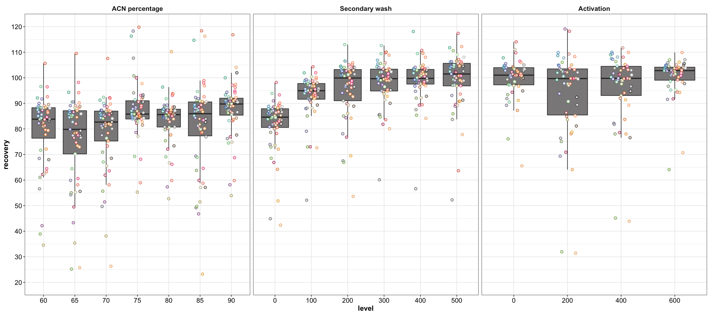
# EMR opt 9.4 X 5.03#-&=$$$$$$$$$$-&=$$$$$$$$$$-&=$$$$$$$$$$-&=$$$$$$$$$$-&=$$$$$$$$$$-&=$$$$$$$$$$-&=$$$$$$$$$$-&=$$$$$$$$$$-----
# silica gel optimization
# first check the recovery without silica gel
# No silica gel
d.gelFree = read_excel(path, sheet = "silica gel 1", range = "C19:BF20")
d.gelFree = d.gelFree %>%
gather(-c(1:2), key = compound, value = recovery)
# compound color (for low recovery compounds)
d.low = d.gelFree %>% filter(recovery < 60)
lowRcmpd = d.low$compound
color.compound = colorRampPalette( brewer.pal(8, "Dark2") %>% sort())(lowRcmpd %>% length())
names(color.compound) = lowRcmpd
plt.sorbentFree = d.gelFree %>%
anti_join(d.low, by = "compound") %>%
ggplot(aes(x = `mass (mg)`, y = recovery)) +
geom_boxplot(outlier.alpha = 0, aes(group = `mass (mg)`),
data = d.gelFree) + # boxplot showing the distribution of all
geom_point(shape = 21, fill = "white", color = "black",
position = position_jitter(.2)) +
theme(legend.position = "None") +
facet_wrap(~`mass (mg)`) +
scale_y_continuous(breaks = seq(0, 130, 10)) +
coord_cartesian(ylim = c(0, 130)) +
# low recovery points
geom_point(data =d.low,
aes(color = compound), position = position_dodge(.2),
shape = 21, stroke = .5, size = 2) +
geom_point(data = d.low,
aes(color = compound, fill = compound), position = position_dodge(.2),
shape = 21, size = 2, alpha = .2) +
scale_color_manual(values = color.compound) +
scale_fill_manual(values = color.compound) +
geom_text_repel(data = d.low,
aes(label = compound, color = compound), size = 2,
position = position_dodge(.2))
plt.sorbentFree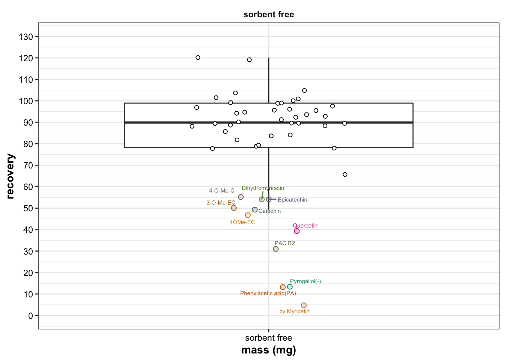
# -<>--<>--<>--<>--<>--<>--<>--<>--<>--<>--<>-
# Now add the silica
d.silica = read_excel(path, sheet = "silica gel 1", range = "A1:BF12")
d.silica = d.silica %>%
select(-c(`Data File`, `Acq. Date-Time`)) %>%
gather(-c(`mass (mg)`, ratio), key = compound, value = resp)
x = d.silica %>%
filter(`mass (mg)` == "control") %>%
select(- c(ratio, `mass (mg)`)) %>%
rename(resp.ctrl = resp)
d.silica = d.silica %>%
filter(`mass (mg)` != "control") %>%
left_join(x, by = "compound") %>%
mutate(recovery = resp/resp.ctrl * 100)
# Plot
# first convert levels to ordered factor
d.silica$ratio = d.silica$ratio %>%
factor(levels = c("NP", "NP:RP=8:2", "NP:RP=5:5", "NP:RP=3:7", "RP"), ordered = T)
d.silica$`mass (mg)` = d.silica$`mass (mg)` %>%
factor(levels = d.silica$`mass (mg)` %>% unique(), ordered = T)
plt.silica = d.silica %>%
filter(! compound %in% lowRcmpd) %>%
ggplot(aes(x = `mass (mg)`, y = recovery)) +
geom_boxplot(outlier.alpha = 0, aes(group = c(`mass (mg)`)),
data = d.silica) + # boxplot showing the distribution of all
geom_point(position = position_jitter(.1), shape = 21, fill = "white") +
theme(legend.position = "None") +
facet_wrap(~ratio, nrow = 1) +
scale_y_continuous(breaks = seq(0, 140, 10)) +
coord_cartesian(ylim = c(0, 130)) +
geom_point(data = d.silica %>% filter(compound %in% lowRcmpd),
position = position_dodge(.2), size = 2, stroke = .5,
aes(color = compound), shape = 21, fill = "white") +
geom_point(data = d.silica %>% filter(compound %in% lowRcmpd),
position = position_dodge(.2),
aes(color = compound, fill = compound), size = 2, alpha = .2) +
geom_text_repel(data = d.silica %>% filter(compound %in% lowRcmpd),
aes(label = compound, color = compound), size = 2,
position = position_dodge(.2)) +
scale_color_manual(values = color.compound) +
scale_fill_manual(values = color.compound)
# plt.silica
# combine sorbent free + with sorbent
plt.silica.all = plot_grid(plt.sorbentFree, plt.silica, nrow = 1, rel_widths = c(1, 6))plt.silica.all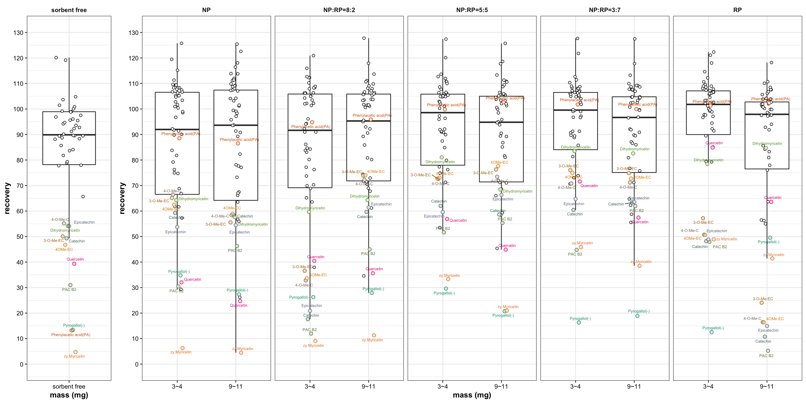
# For those special low recovery compounds, check the condition of their best performance
plt.lowRcmpd = d.silica %>% filter(compound %in% lowRcmpd) %>%
ggplot(aes(x = ratio, y = recovery, color = compound)) +
geom_line(aes(group = compound), position = position_dodge(.2)) +
geom_point(shape = 21, fill = "white", stroke = 1, size= 2,
position = position_dodge(.2)) +
facet_wrap(~`mass (mg)`) +
scale_y_continuous(breaks = seq(10, 80, 10)) +
theme(legend.position = "bottom") +
scale_color_manual(values = color.compound)
plt.lowRcmpd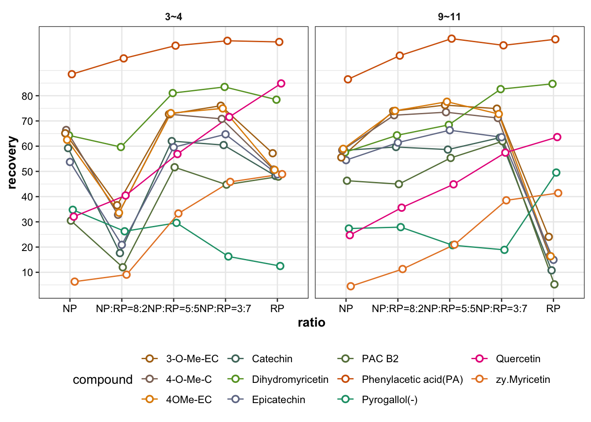
plt.silica.all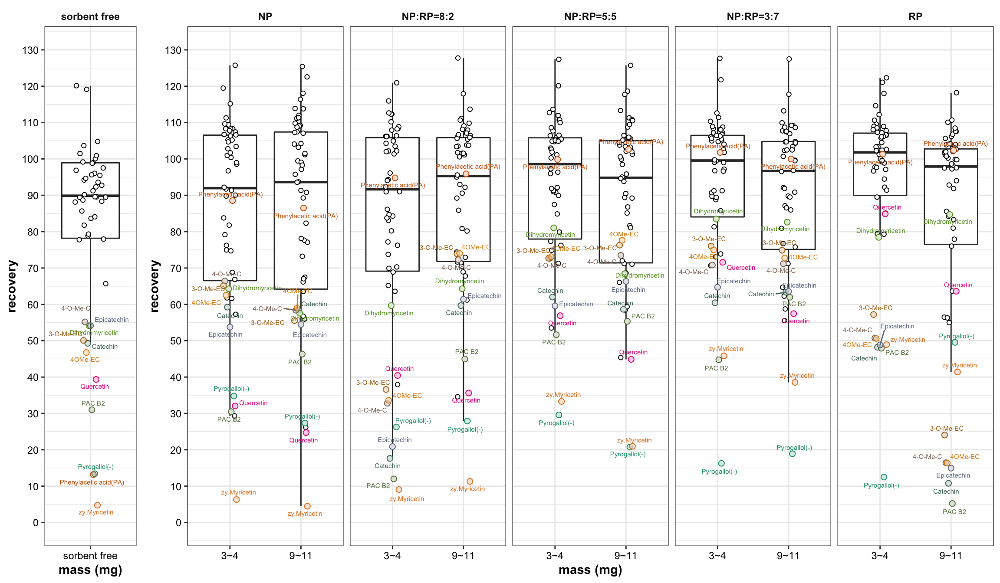
# -《》--《》--《》--《》--《》--《》--《》--《》--《》--《》--《》--《》--《》--《》-
# Repeat the silica gel experiment in a more consistent manner July 18
d.silica2 = read_excel(path, sheet = "silica gel 2", range = "B2:BD16")
d.silica2 = d.silica2 %>% gather(-c(treatment), key = compound, value = resp)
x = d.silica2 %>% filter(treatment == "ctrl") %>%
group_by(compound) %>%
summarise(resp.ctrl.mean = mean(resp),
resp.ctrl.sd = sd(resp))
d.silica2.recovery = d.silica2 %>% filter(treatment != "ctrl") %>%
group_by(compound, treatment) %>%
summarise(resp.mean = mean(resp),
resp.sd = sd(resp)) %>%
# augment with control response
left_join(x, by = "compound") %>%
mutate(recovery.mean = resp.mean / resp.ctrl.mean * 100,
recovery.sd = sqrt((resp.sd / resp.mean)^2 + (resp.ctrl.sd/resp.ctrl.mean)^2) * recovery.mean)
d.silica2.recovery$treatment = d.silica2.recovery$treatment %>%
factor(levels = c("Sorbent free", "NP", "NP:RP=8:2","NP:RP=5:5","NP:RP=3:7", "RP" ), ordered = T)
# high recovery compounds
d.silica2.recovery.normal = d.silica2.recovery %>% filter(!(compound %in% lowRcmpd))
# low recovery compounds
d.silica2.recovery.Low = d.silica2.recovery %>% filter(compound %in% lowRcmpd)
# plot
dg2 = .2
plt.sorbent2 = d.silica2.recovery.normal %>%
ggplot(aes(x = treatment, y = recovery.mean)) +
geom_boxplot(data = d.silica2.recovery, outlier.alpha = 0,
aes(group = treatment), width = .6, fill = "snow1") +
geom_point(position = position_jitter(.1), alpha = .5, size = 3) +
theme(legend.position = "None",panel.grid = element_blank()) +
coord_cartesian(ylim = c(0, 140)) +
scale_y_continuous(breaks = seq(0, 150, 10)) +
# highlight low recovery compounds
geom_errorbar(data = d.silica2.recovery.Low,
aes(ymin = recovery.mean - recovery.sd,
ymax = recovery.mean + recovery.sd, color = compound),
size = .2, width = .5, position = position_dodge(dg2)) +
geom_text_repel(data = d.silica2.recovery %>% filter(compound %in% lowRcmpd),
aes(label = compound, color = compound),
position = position_dodge(dg2), size = 3.5, fontface = "bold") +
geom_line(data = d.silica2.recovery.Low,
aes(color = compound, fill = compound, group = compound), size = .1,
position = position_dodge(dg2)) +
geom_point(data = d.silica2.recovery.Low,
aes(color = compound), shape = 21, fill = "white",
position = position_dodge(dg2), size = 4) +
geom_point(data = d.silica2.recovery.Low,
aes(color = compound, fill = compound), shape = 21,
position = position_dodge(dg2), size = 4, alpha = .2) +
labs(y = "Recovery") +
scale_color_manual(values = color.compound) +
scale_fill_manual(values = color.compound)## Warning: Ignoring unknown aesthetics: fillplt.sorbent2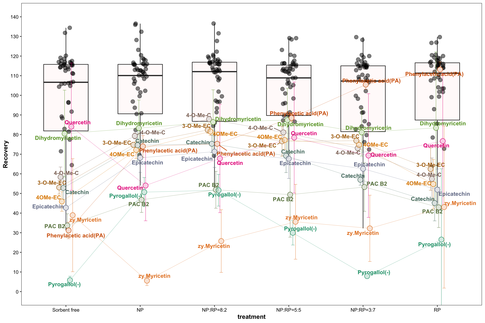
# plt.silica.all
ggdraw() +
draw_plot(plt.EMR.optimization, y = .5, height = .5) +
draw_plot(plt.sorbent2, x = .1, width = .8, height = .5)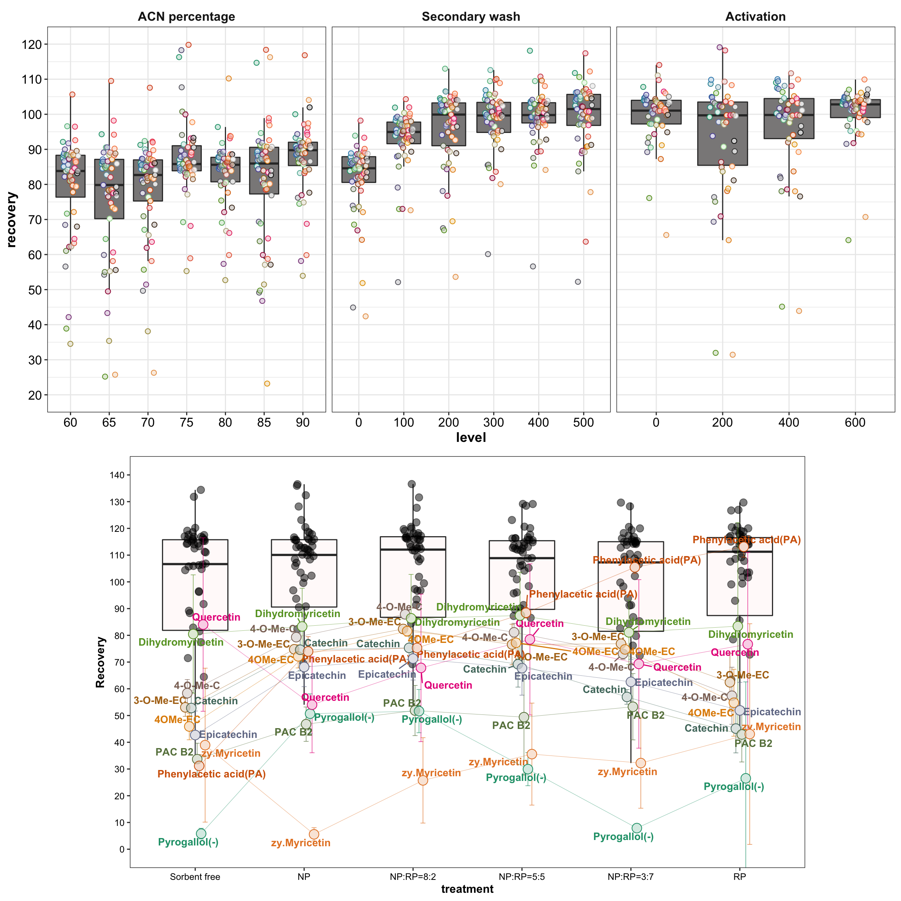
#<>-<>-<>-<>-<>-<>-<>-<>-<>-<>-<>-<>-<>-<>-<>-<>-<>-<>-<>-<>-<>-<>-<>-<>-<>-<>-
# silica gel with matrix. July 19 experiment
# Using IS correction
d.silica3 = read_excel(path, sheet = "silica with matrix", range = "A49:BC55")
d.silica3 = d.silica3 %>%
gather(-treatment, key = compound, value = recovery)
d.silica3$treatment = d.silica3$treatment %>%
factor(levels = d.silica3$treatment %>% unique(), ordered = T)
normalx = d.silica3 %>% filter(!(compound %in% lowRcmpd))
lowx = d.silica3 %>% filter(compound %in% lowRcmpd)
plt.silica.matrix.IS.Corrected =
normalx %>% ggplot(aes(x = treatment, y = recovery)) +
geom_boxplot(data = d.silica3, outlier.alpha = 0, width = .6,
fill = "snow1") +
geom_point(position = position_jitter(.1), alpha = .6) +
theme(legend.position = "None", panel.grid = element_blank()) +
# highlight low recovery compounds
geom_point(data = lowx, aes(color = compound),
position = position_dodge(.2), size = 3) +
geom_line(data = lowx, aes(group = compound, color = compound), size = .2,
position = position_dodge(.2)) +
geom_text_repel(data = lowx, aes(color = compound, label = compound),
position = position_dodge(.2), size = 2.5, fontface = "bold") +
scale_color_manual(values = color.compound) +
coord_cartesian(ylim = c(0, 140)) +
scale_y_continuous(breaks = seq(0, 150, 10))
plt.silica.matrix.IS.Corrected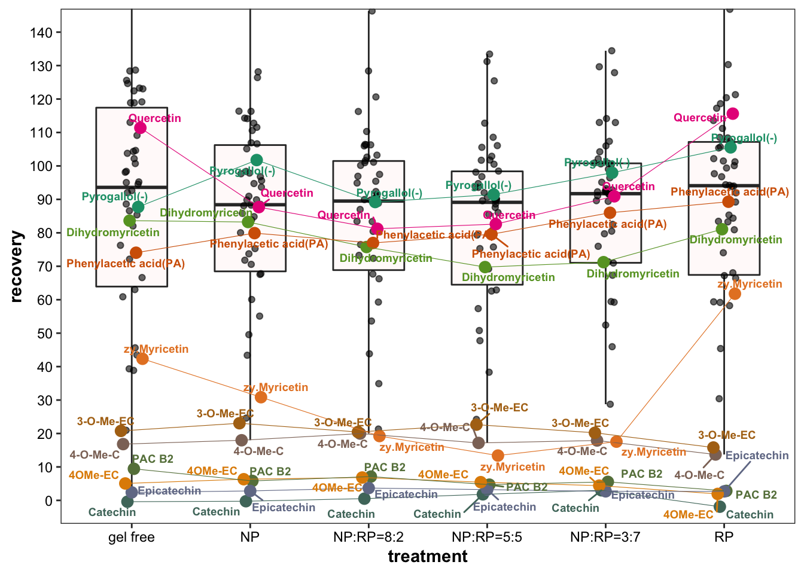
d.silica3$recovery %>% hist(breaks = 50)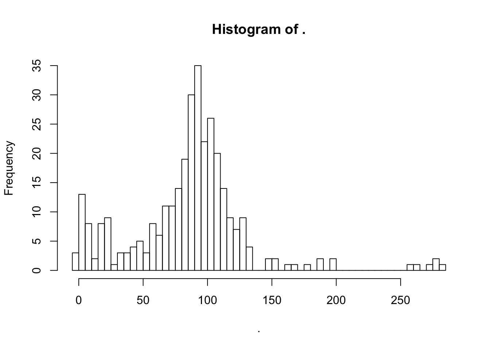
# without IS correction
d.silica3.notCorrected = read_excel(path, sheet = "silica with matrix", range = "A1:BC17")
# extract treatment name
d.silica3.notCorrected$treatment = d.silica3.notCorrected$Sample %>%
str_remove(pattern = DOT %R% "r") %>%
str_remove(pattern = DOT %R% zero_or_more("2") %R% zero_or_more(DOT) %R% "d")
# mean and std
d.silica3.notCorrected = d.silica3.notCorrected %>%
select(-Sample) %>%
gather(-treatment, key = compound, value = area) %>%
group_by(treatment, compound) %>%
summarise(area.mean = mean(area), area.sd = sd(area))
# background, contrl and sorbent
blk = d.silica3.notCorrected %>% filter(treatment == "1B") %>%
ungroup() %>% select(-treatment) %>%
rename(area.mean.blk = area.mean,
area.sd.blk = area.sd)
ctrl = d.silica3.notCorrected %>% filter(treatment == "control") %>%
ungroup() %>% select(-treatment) %>%
rename(area.mean.ctrl = area.mean,
area.sd.ctrl = area.sd)
# calculate recovery (not IS corrected)
d.silica3.notCorrected =d.silica3.notCorrected %>%
filter(!(treatment %in% c("1B", "control"))) %>%
left_join(ctrl, by = "compound") %>%
left_join(blk, by = "compound") %>%
mutate(area.net.mean = area.mean - area.mean.blk,
recovery = area.net.mean / area.mean.ctrl * 100)
d.silica3.notCorrected$treatment = d.silica3.notCorrected$treatment %>%
factor(levels = c("gel free", "NP", "NP:RP=8:2", "NP:RP=5:5", "NP:RP=3:7", "RP"), ordered = T)
low3 = d.silica3.notCorrected %>% filter(compound %in% lowRcmpd)
normal3 = d.silica3.notCorrected %>% filter(!(compound %in% lowRcmpd))
plt.silica.matrix.Notcorrected =
normal3 %>%
ggplot(aes(x = treatment, y = recovery)) +
geom_boxplot(data = d.silica3.notCorrected,
outlier.alpha = 0, width = .6,
fill = "snow1") +
geom_point(position = position_jitter(.1), alpha = .6, size = 3) +
coord_cartesian(ylim = c(0, 140)) +
scale_y_continuous(breaks = seq(0, 150, 10)) +
geom_line(data = low3, aes(group = compound, color = compound),
size = .2, position = position_dodge(.2)) +
geom_point(data = low3, aes(color = compound), shape = 21, fill = "white",
position = position_dodge(.2), size = 4) +
geom_point(data = low3, aes(color = compound, fill = compound),
position = position_dodge(.2), size = 4, alpha = .2) +
geom_text_repel(data = low3,
aes(label = compound, color =compound),
position = position_dodge(.2),
size = 3.5, fontface = "bold") +
scale_color_manual(values = color.compound) +
scale_fill_manual(values = color.compound) +
theme(legend.position = "None", panel.grid = element_blank())plt.silica.matrix.Notcorrected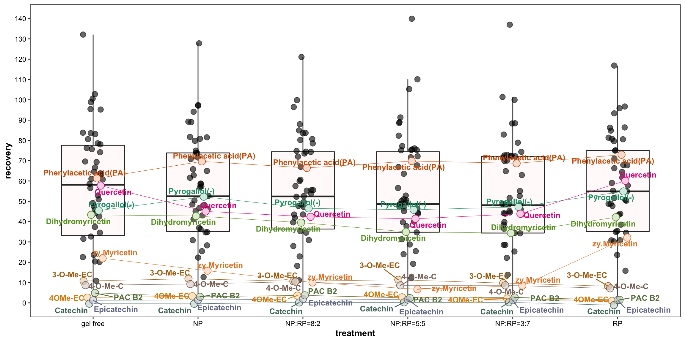
# plot_grid(plt.sorbent2,
#
# plot_grid(plt.silica.matrix.Notcorrected,
# plt.silica.matrix.IS.Corrected, nrow = 1),
# nrow = 2)ggdraw() +
draw_plot(plt.sorbent2, y = .5, height = .5, x = .2, width = .6) +
draw_plot(plot_grid(plt.silica.matrix.Notcorrected,
plt.silica.matrix.IS.Corrected, nrow = 1),
x = 0, width = 1, height = .5, y = 0)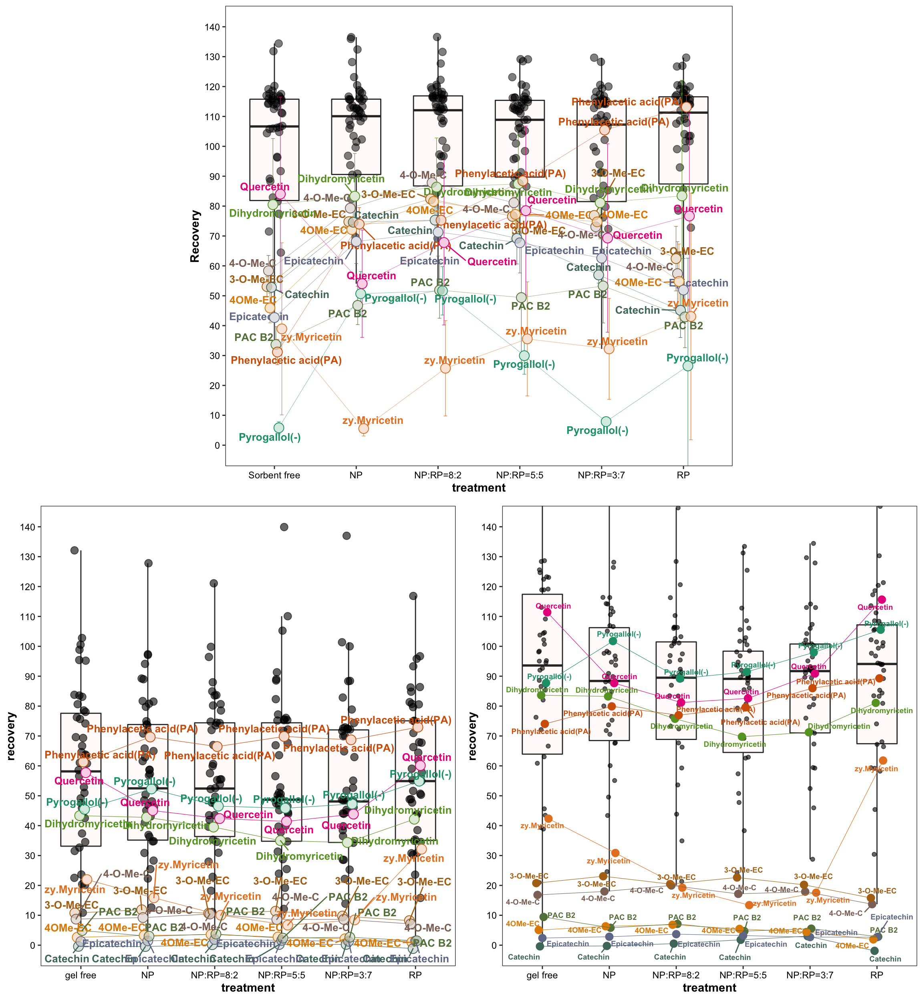
theme_set(theme_bw() + theme(axis.text = element_text(size = 19),
axis.title = element_text(size = 19)))
plot_grid(plt.sorbent2,
plt.silica.matrix.Notcorrected,
#plt.silica.matrix.IS.Corrected,
nrow = 1,
# labels = c("A", "B"#, "C"
# ),
label_size = 18)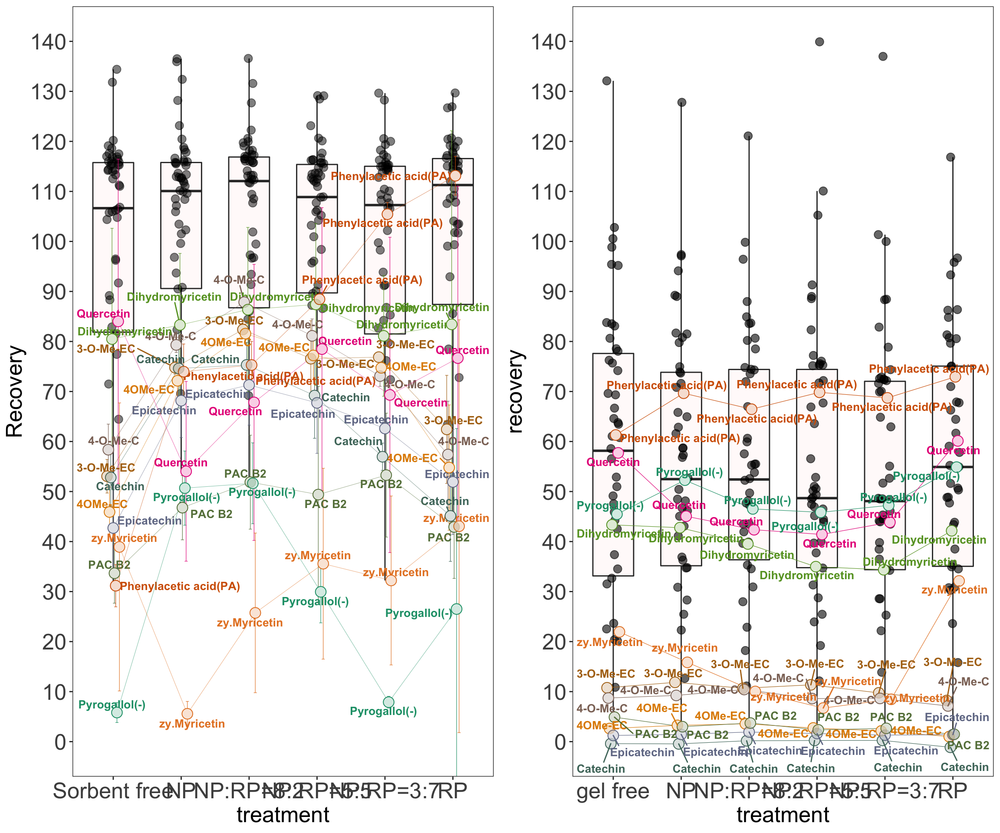
# device size 19 X 9.5